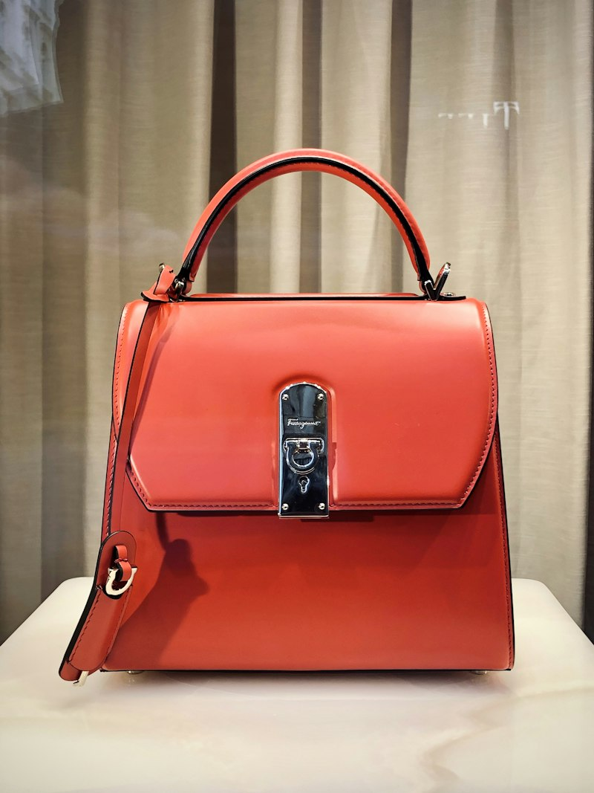

HandbagALUNA BAG
Rp 285.000Aluna Bag memadukan keindahan motif Tenun Ulos Sadum berwarna cerah dengan siluet tas tangan klasik yang tegas dan berkelas. Tas ini dilengkapi kompartemen utama yang luas serta tali panjang lepas-pasang sehingga sangat cocok untuk menghadiri acara pesta maupun pertemuan resmi.
Material: Ulos Sadum & Kulit Sintetis
Tanya Stok